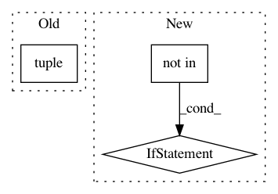

4fb88fdc63292d93ce2fdbbf77a4043f18b2c769,nn_dataflow/Network.py,Network,add,#Network#Any#Any#Any#,35
Before Change
// Has previously added layers.
prevs = (self.layer_dict.keys()[-1],)
else:
prevs = tuple()
self.layer_dict[layer_name] = layer
self.prevs_dict[layer_name] = prevs
After Change
If previous layer(s) is not given, assume it follows the last added
layer.
"""
if self.INPUT_LAYER_KEY not in self.layer_dict:
raise RuntimeError("Network: must first set input layer.")
if layer_name in self.layer_dict:
raise KeyError("Network: layer {} already exists."
.format(layer_name))
In pattern: SUPERPATTERN
Frequency: 3
Non-data size: 3
Instances
Project Name: stanford-mast/nn_dataflow
Commit Name: 4fb88fdc63292d93ce2fdbbf77a4043f18b2c769
Time: 2017-05-03
Author: mgao12@stanford.edu
File Name: nn_dataflow/Network.py
Class Name: Network
Method Name: add
Project Name: IndicoDataSolutions/finetune
Commit Name: 5b1cfa22c1dc08e92f8a21311728397cfb84ffe1
Time: 2018-08-22
Author: madison@indico.io
File Name: finetune/utils.py
Class Name:
Method Name: finetune_to_indico_sequence
Project Name: onnx/onnx-coreml
Commit Name: fb77632a28e3338cb7e5a0d0c0f2c7ba76cdb984
Time: 2018-03-29
Author: aseem.elec@gmail.com
File Name: onnx_coreml/_transformers.py
Class Name: ReshapeInitTensorFuser
Method Name: __call__